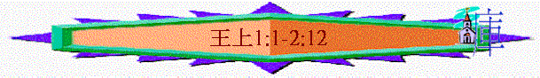

|
屬神國度的衰落 |
|||
|
二王—行神的旨意得堅固 |
二國—不專心順服終分裂 |
二先知—神能力彰顯仍剛硬 |
二結局—繼續行惡至終亡國 |
|
王上1-10 |
王上11-16 |
王上17-王下9:4 |
王下9:5-25:30 |
一.二王(王上1-10)---行神的旨意得堅固
1.大衛王----神的旨意必成就(1:1-2:12)
A.神的旨意
「對所羅門說：「我兒啊，我心裡本想為耶和華我神的名建造殿宇，只是耶和華的話臨到我說：『你流了多人的血，打了多次大仗，你不可為我的名建造殿宇，因為你在我眼前使多人的血流在地上。你要生一個兒子，他必作太平的人；我必使他安靜，不被四圍的仇敵擾亂。他的名要叫所羅門（就是太平的意思）。他在位的日子，我必使以色列人平安康泰。」代上22:7-9
～神的旨意是要所羅門承繼大衛的位，坐在寶座上作王的，當初大衛
及所羅門也知道的
～但其他兒子或臣僕是否完全知道呢？可能未必所有認知，否則不會出現後面的危機
B.危機出現
～以下危機出現，在人的角度，可能會令神的旨意不能成就的
a.一代領袖的有限
(1)年紀有限
「大衛王年紀老邁，雖用被遮蓋，仍不覺暖。」王上1:1
～強如大衛的領袖，他也會有老的一日，會面對死亡，若一代領袖過去，後一代會否跟從神的心意
(2)身體有限
「大衛王年紀老邁，雖用被遮蓋，仍不覺暖。所以臣僕對他說：「不如為我主我王尋找一個處女，使他伺候王，奉養王，睡在王的懷中，好叫我主我王得暖。」」1:1-2
「這童女極其美貌，他奉養王，伺候王，王卻沒有與他親近。」1:4
～因他身體開始衰弱，臣僕為他找了書念的童女----亞比煞伺候，也睡在他懷中，令他身體得暖
～大衛雖沒與她親近(可能身體能力有限)，但此女子仍是屬大衛的女子
(3)管教有限
「他父親素來沒有使他憂悶，說：「你是做什麼呢？」他甚俊美，生在押沙龍之後。」1:6
～大衛似乎在管教他的兒子上也有限，押沙龍背叛他作王，他的大兒子暗嫩侵犯妹妹，到了他的四兒子—亞多尼雅，似乎大衛也沒有對他很嚴厲，沒有干擾他的行為，可能也間接縱容他日後自尊為王
(4)認知有限
「拿單對所羅門的母親拔示巴說：「哈及的兒子亞多尼雅作王了，你沒有聽見嗎？我們的主大衛卻不知道。」1:11
～而他的兒子日後不斷建立勢力，似乎他也不知道
b.亞多尼雅的自尊
(1)得天獨厚
「他父親素來沒有使他憂悶，說：「你是做什麼呢？」他甚俊美，生在押沙龍之後。」1:6
～亞多尼雅是大衛的第四兒子，之前大兒子與三兒子也死去，次子基利押有傳可能早夭，所以順理成章，按次序而排，他可能估計自己應承繼為王
～加上他生成甚俊美，也似乎得王縱容，所以成王的機會甚大
(2)自尊為王
「那時，哈及的兒子亞多尼雅自尊，說：「我必作王」，就為自己預備車輛、馬兵，又派五十人在他前頭奔走。」1:5
(3)招兵買馬
(4)得人幫助
「亞多尼雅與洗魯雅的兒子約押，和祭司亞比亞他商議；二人就順從他，幫助他。但祭司撒督、耶何耶大的兒子比拿雅、先知拿單、示每、利以，並大衛的勇士都不順從亞多尼雅。」1:7-8
「約押作以色列全軍的元帥；耶何耶大的兒子比拿雅統轄基利提人和比利提人；亞多蘭掌管服苦的人；亞希律的兒子約沙法作史官；示法作書記；撒督和亞比亞他作祭司長；」撒下20:23-25
～約押是軍隊的元帥，代表軍隊的勢力，亞比亞他是祭司，代表宗教的勢力、軍力，宗教勢力也協助他邁向作王多一步！
～當然另一祭司撒督，先知拿單及示每、利以及大衛的勇士不依從他們
(5)拉攏眾人
「一日，亞多尼雅在隱羅結旁、瑣希列磐石那裡宰了牛羊、肥犢，請他的諸弟兄，就是王的眾子，並所有作王臣僕的猶大人；惟獨先知拿單和比拿雅並勇士，與他的兄弟所羅門，他都沒有請。」1:9-10
～惟獨先知拿單、比拿雅並勇士及所羅門，他沒有請，明顯此宴會是拉攏及聚合有機會成為他們聯盟的人
c.所羅門被殺危機
「現在我可以給你出個主意，好保全你和你兒子所羅門的性命。」1:12
～若亞多尼雅真是繼續擴大勢力，他隨時會可能要穩固自己的王位，殺了所羅門
C.至終化解
a.拿單的主意
(1)勇敢的題出
「拿單對所羅門的母親拔示巴說：「哈及的兒子亞多尼雅作王了，你沒有聽見嗎？我們的主大衛卻不知道。」1:11
～此危機的化解關鍵是出現了一位人物----先知拿單，當年他勇敢指出大衛犯姦淫的罪，現在他同樣勇敢向拔示巴題出主意，讓神的旨意成就
(2)智慧的建議
「你進去見大衛王，對他說：『我主我王啊，你不曾向婢女起誓說：你兒子所羅門必接續我作王，坐在我的位上嗎？現在亞多尼雅怎麼作了王呢？』你還與王說話的時候，我也隨後進去，證實你的話。」」1:13-14
(A)不是拿單先向王諫言
～拿單清楚自己的角色是先知，他若主動直接向大衛題出要立所羅門為王，大衛可能說：「這是我的家事，與你何干？」「你為何要題出此心意，你想參與我的政權？」
(B)不是所羅門向王題出
～若所羅門主動題出，一來他年幼，可能沒有勇氣表達，二來令人覺得所羅門有私心，對兄有不敬意思
(C)要拔示巴主動提出
～關乎王的位是真正與拔示巴和他兒子有關
～而拔示巴是大衛所愛的，她題出沒有人會覺所羅門對兄有不敬之意
～而且拔示巴也聽到王曾向她起誓，所羅門必接續王，拔示巴說出會更提醒大衛對神對人的承諾
(D)拿單隨後再進來證實
～拿單隨後再來用先知的角度，証實亞多尼雅的自尊及提醒大衛要明確表明立場，這安排令拔示巴所講的內容更有說服力
b.拔示巴與拿單的行動
(1)拔示巴的提出
「拔示巴進入內室見王，王甚老邁，書念的童女亞比煞正伺候王。拔示巴向王屈身下拜；王說：「你要什麼？」他說：「我主啊，你曾向婢女指著耶和華你的神起誓說：『你兒子所羅門必接續我作王，坐在我的位上。』現在亞多尼雅作王了，我主我王卻不知道。他宰了許多牛羊、肥犢，請了王的眾子和祭司亞比亞他，並元帥約押；惟獨王的僕人所羅門，他沒有請。」1:15-19
「我主我王啊，以色列眾人的眼目都仰望你，等你曉諭他們，在我主我王之後誰坐你的位。若不然，到我主我王與列祖同睡以後，我和我兒子所羅門必算為罪人了。」」1:20-21
～v.21「我兒所羅門必算為罪人」應指若亞多尼雅作王，可能降罪於拔示巴及所羅門
(2)拿單的印證
「拔示巴還與王說話的時候，先知拿單也進來了。」1:22
「拿單說：「我主我王果然應許亞多尼雅說『你必接續我作王，坐在我的位上』嗎？」1:24
「這事果然出乎我主我王嗎？王卻沒有告訴僕人們，在我主我王之後誰坐你的位。」」1:27
～拿單用反問的問題，令大衛想回當初神的心意，大衛的承諾及大衛現在應當做的事，拿單雖是先知，他也有技巧的引導大衛王作英明的判斷！
c.大衛的行動
(1)行神的旨意
「王起誓說：「我指著救我性命脫離一切苦難、永生的耶和華起誓。我既然指著耶和華以色列的神向你起誓說：你兒子所羅門必接續我作王，坐在我的位上。我今日就必照這話而行。」」1:29-30
(2)堅決的決心
～王所說的話就是不追回的命令，而大衛更用「向神起誓」，表明他的決心
(3)勇敢的行上
～大衛要行此心意，他可能會想起押沙龍事件，昔日他的兒子因王位而追殺他，若他反對亞多尼雅而立所羅門，亞多尼雅也會否追殺大衛呢？
～但大衛仍勇敢按他的承諾而行！
(4)智慧的計劃
(A)召集幫助者
「大衛王又吩咐說：「將祭司撒督、先知拿單、耶何耶大的兒子比拿雅召來！」他們就都來到王面前。」1:32
(B)膏所羅門為王
「王對他們說：「要帶領你們主的僕人，使我兒子所羅門騎我的騾子，送他下到基訓；在那裡，祭司撒督和先知拿單要膏他作以色列的王；你們也要吹角，說：『願所羅門王萬歲！』然後要跟隨他上來，使他坐在我的位上，接續我作王。我已立他作以色列和猶大的君。」1:33-35
(a)智慧的時間：立刻膏他為王
(b)智慧的地方：在基訓，在耶路撒冷的東面，距離亞多尼雅大擺筵席的隱羅結只有半公里，中間有小丘，此地方可以避開亞多尼雅的勢力，但若吹角聲，也可令耶路撒冷的人聽到，他們可以知到此事實，會不其然跟從新膏的王(增加保護王的勢力入耶路撒冷)而令到亞多尼雅也措手不及
(c)智慧的印証：以祭司撒督及先知拿單膏所羅門，加上坐王的騾子，有祭司、先知、王的印証，更肯定所羅門為王的事實
d.臣僕的依從
「耶何耶大的兒子比拿雅對王說：「阿們！願耶和華我主我王的神也這樣命定。耶和華怎樣與我主我王同在，願他照樣與所羅門同在，使他的國位比我主大衛王的國位更大。」於是，祭司撒督、先知拿單、耶何耶大的兒子比拿雅，和基利提人、比利提人都下去使所羅門騎大衛王的騾子，將他送到基訓。祭司撒督就從帳幕中取了盛膏油的角來，用膏膏所羅門。人就吹角，眾民都說：「願所羅門王萬歲！」」1:36-39
～「基利提人、比利提人」是大衛的王室警衛軍
e.眾民的擁戴
「眾民跟隨他上來，且吹笛，大大歡呼，聲音震地。」1:40
「並且所羅門登了國位。王的臣僕也來為我們的主大衛王祝福，說：『願王的神使所羅門的名比王的名更尊榮；使他的國位比王的國位更大。』王就在床上屈身下拜。」1:46-47
f.大衛的肯定
「王又說：『耶和華以色列的神是應當稱頌的；因他賜我一人今日坐在我的位上，我也親眼看見了。』」」1:48
g.至終的結局
(1)亞多尼雅聞訊
「亞多尼雅和所請的眾客筵宴方畢，聽見這聲音；約押聽見角聲就說：「城中為何有這響聲呢？」他正說話的時候，祭司亞比亞他的兒子約拿單來了。亞多尼雅對他說：「進來吧！你是個忠義的人，必是報好信息。」約拿單對亞多尼雅說：「我們的主大衛王誠然立所羅門為王了。」1:41-43
(2)賓客四散
「亞多尼雅的眾客聽見這話就都驚懼，起來四散。」1:49
(3)亞多尼雅的懼怕
「亞多尼雅懼怕所羅門，就起來，去抓住祭壇的角。有人告訴所羅門說：
「亞多尼雅懼怕所羅門王，現在抓住祭壇的角，說：『願所羅門王今日向我起誓，必不用刀殺僕人。』」所羅門說：「他若作忠義的人，連一根頭髮也不至落在地上；他若行惡，必要死亡。」於是所羅門王差遣人，使亞多尼雅從壇上下來，他就來，向所羅門王下拜；所羅門對他說：「你回家去吧！」」1:50-53
「「打父母的，必要把他治死。」出21:15
～祭壇是祭司為人贖罪的地方，昔日人犯了不是故意的罪，若抓住祭壇的角，或許得赦免，但人若是故意行惡，也必會死亡
～至終所羅門暫不殺亞多尼雅
D.王的遺命
「大衛的死期臨近了，就囑吩他兒子所羅門說：」2:1
a.當剛強
「我現在要走世人必走的路。所以，你當剛強，作大丈夫，」2:2
～所羅門年輕作王，但不要懼怕，要剛強作大丈夫
b.當守道
「遵守耶和華你神所吩咐的，照著摩西律法上所寫的行主的道，謹守他的律例、誡命、典章、法度。這樣，你無論做什麼事，不拘往何處去，盡都亨通。耶和華必成就向我所應許的話說：『你的子孫若謹慎自己的行為，盡心盡意誠誠實實地行在我面前，就不斷人坐以色列的國位。』」2:3-4
～作王得亨通的秘訣在於甚麼？就是遵守神的話
～大衛特別提及「摩西律法」，在摩西律法中已申命王應行的事，百姓應守的條例
～王及他的子孫若遵守，國位必得堅定
c.行公義
～神是公義的神，作為王—代表神審判人的事，實應行公義
(1)殺約押
「你知道洗魯雅的兒子約押向我所行的，就是殺了以色列的兩個元帥：尼珥的兒子押尼珥和益帖的兒子亞瑪撒。他在太平之時流這二人的血，如在爭戰之時一樣，將這血染了腰間束的帶和腳上穿的鞋。」2:5
「押尼珥回到希伯崙，約押領他到城門的甕洞，假作要與他說機密話，就在那裡刺透他的肚腹，他便死了。這是報殺他兄弟亞撒黑的仇。」撒下3:27
「亞瑪撒沒有防備約押手裡所拿的刀；約押用刀刺入他的肚腹，他的腸子流在地上，沒有再刺他，就死了。約押和他兄弟亞比篩往前追趕比基利的兒子示巴。」撒下20:10
～押尼珥原是掃羅的元帥，亞瑪撒是押沙龍的元帥，他們最終歸服了大衛
～但約押因為自己報仇的心及嫉妒，在太平非爭戰的日子殺了他們，神是公義的神，作為地上公義的所羅門，應行神的公義，不容約押白頭安然下陰間，即令他死亡
(2)恩待巴西萊眾子
「你當恩待基列人巴西萊的眾子，使他們常與你同席吃飯；因為我躲避你哥哥押沙龍的時候，他們拿食物來迎接我。」2:7
～而凡對神所揀選的王好之人，也恩待
(3)殺示每
「在你這裡有巴戶琳的便雅憫人，基拉的兒子示每；我往瑪哈念去的那日，他用狠毒的言語咒罵我，後來卻下約但河迎接我，我就指著耶和華向他起誓說：『我必不用刀殺你。』現在你不要以他為無罪。你是聰明人，必知道怎樣待他，使他白頭見殺，流血下到陰間。」」2:8-9
～示每是掃羅家的，曾咒駡神所立的王—大衛，大衛曾不殺他但不代表示每在神眼中沒罪的，他仍要受當得的刑罰
E.王的壽終
「大衛與他列祖同睡，葬在大衛城。大衛作以色列王四十年：在希伯崙作王七年，在耶路撒冷作王三十三年。所羅門坐他父親大衛的位，他的國甚是堅固。」2:10-12
～大衛至終離去，一生作王四十年，而所羅門正式繼位，他的國甚是堅固
～之前雖有危機出現，但神的旨意也能成就，人不能改變神的旨意！